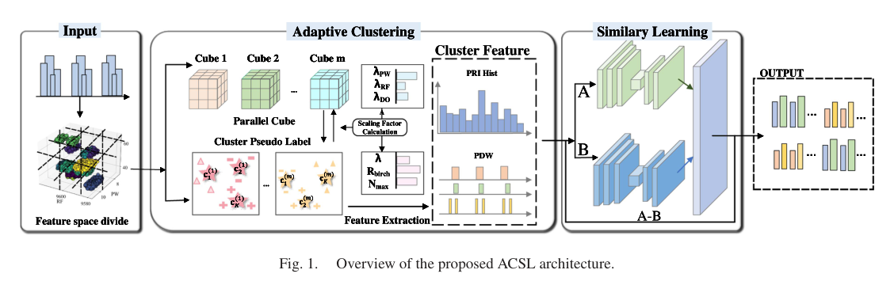
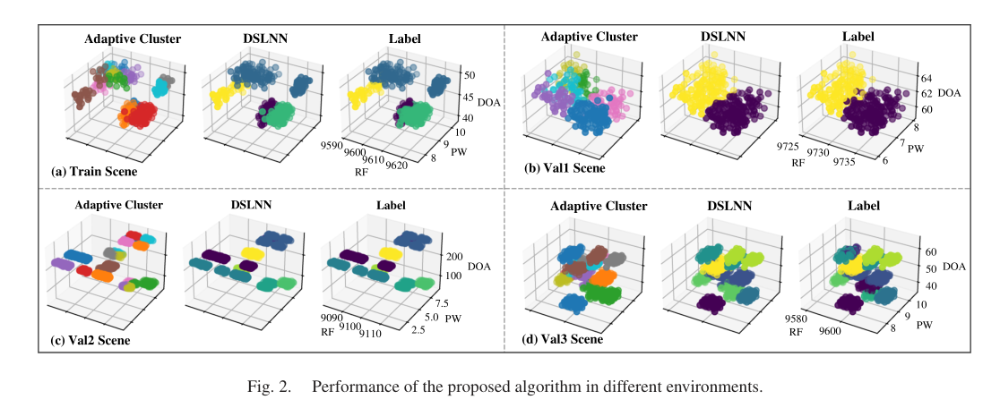
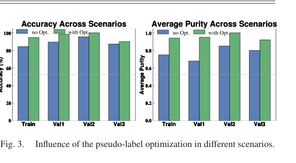

Paper brief
Adaptive Clustering With Similarity Learning for Enhanced Multi-Scenario Radar Signal Processing
IEEE Signal Processing Letters, 32 · 1840-1844
ACSL combines adaptive clustering for pseudo-label generation with similarity learning to improve radar signal sorting in complex scenes.
Research question
Radar signal sorting degrades under high density, strong interleaving, and multi-scenario distribution shifts, while fully supervised deep models require large labeled datasets.
Method
ACSL partitions RF, PW, and DOA feature spaces with adaptive scaling to generate pseudo-labels, then uses a dual-branch similarity network with PRI and feature differences to decide whether clusters originate from the same radar.
Technical route
- Feature partition
Dynamically partition PDW streams by RF, PW, and DOA.
- Pseudo labels
Generate initial clusters through adaptive clustering and scaling.
- PRI relation
Compute PRI and feature differences between clusters.
- Similarity network
Decide whether clusters should be merged as the same radar source.
Evidence
- Supervision
- Pseudo-label
Reduces reliance on large labeled datasets.
- Robustness
- Multi-scenario
Targets distribution shifts across radar scenes.
- Output
- RSS clusters
Produces deinterleaved radar pulse clusters.


Adaptive Clustering Architecture
The architecture combines initial clustering, pseudo-label construction, similarity learning and cluster-relation decisions.
The method separately models intra-cluster structure and inter-cluster relations to reduce pseudo-label noise.
Source: IEEE Signal Processing Letters, 32, 1840-1844 (2025). © 2025 IEEE.
View full-size figure

Multi-Scenario Deinterleaving Results
The figure group covers different scene complexities to assess stability on realistic radar signals.
It shows that the method is intended for diverse electromagnetic scenarios rather than one narrow simulation case.
Source: IEEE Signal Processing Letters, 32, 1840-1844 (2025). © 2025 IEEE.
View full-size figure

Pseudo-Label and Ablation Analysis
The ablation results isolate the contribution of pseudo-labeling and similarity-learning components.
This helps identify which module drives the improvement.
Source: IEEE Signal Processing Letters, 32, 1840-1844 (2025). © 2025 IEEE.
View full-size figureTakeaway & limitations
Radar signal sorting can use clustering to form weak labels and a similarity network to refine cluster-level relationships.
The pipeline combines unsupervised clustering, PRI knowledge, and deep similarity judgment, matching label scarcity and scenario variation in real reconnaissance tasks.
- Uses adaptive scaling to reduce distribution differences across sub-blocks and scenes.
- Combines pseudo-label optimization with similarity learning.
- Addresses accuracy, purity, robustness, and computation time in radar signal sorting.
A useful template for weakly supervised radar sorting: read it through pseudo-label quality and cluster-merge decisions.
Citation
Qi Sun, Zhen Cao, Yulei Huang, Yifan Ge, and Yunlong Wang. Adaptive Clustering With Similarity Learning for Enhanced Multi-Scenario Radar Signal Processing. IEEE Signal Processing Letters, 2025, 1840-1844.
Download BibTeX